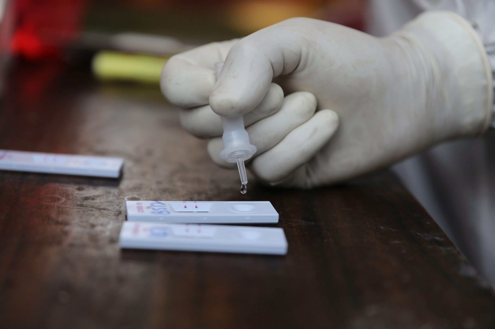

Antigen Rapid Test: Is it Good Enough to Detect Covid?
It has been noticeable for weeks that the number of PCR tests performed in Hungary has stagnated at around 10-12,000 tests per day, as laboratories could not expand their capacities further without the appropriate human and financial resources.However, in more and more places, the so-called antigen rapid tests which are said to detect the new coronavirus with up to 97% efficiency, have started to be used.While ambulance services have been using the antigen tests for weeks now, a political debate has escalated in Hungary between the Budapest mayor, in support of this type of testing, and the National Health Center.So the question remains: which test type is more efficient and when should we use the faster, cheaper tests?ANALYSIS.
As there is no vaccine or specific treatment yet, early detection of infection is essential to contain the epidemic.Most people want a medical test to determine as quickly and clearly as possible whether the patient being tested is infected with a pathogen or not.However, infection is a biological process that needs time to take place; therefore, unfortunately, there is no test that could determine the fact of infection with 100% certainty at a given moment.
In the early stages of infection, the diagnostic test may be negative and may only show the fact of infection after some time – so in some cases it may be necessary to subject ourselves to the test several times.We currently have three options if we suspect coronavirus, or just want to make sure we haven’t caught the infection so we can protect our loved ones from further infection, for which a laboratory test, the RT-PCR test, provides the most reliable method.However, as laboratory capacities are reaching their limits in recent weeks, more and more places are turning to the faster and easier method, the antigen testing.
Last week, Budapest Mayor Gergely Karácsony announced that the municipality of Budapest will purchase 100,000 antigen rapid tests from its own resources in an effort to halt the spread of COVID-19 infections and help the testing of teachers because the government was reluctant to do so.In his announcement, Karácsony said that the rapid antigen tests 'are as reliable as PCR tests.'Karácsony insisted that unlike PCR tests, antigen tests produce almost 100 percent accurate results 'just in a matter of 15 minutes and at a much lower cost.'However, the National Health Center (NNK) said that the mayor’s statement is 'a huge mistake and professionally unfounded,' arguing that antigen tests were unsuitable for mass screenings of those who are symptom-free, or exhibit only mild symptoms of COVID-19 infection.An antigen test in a latter case would most likely produce 'a false negative result,' therefore it is recommended the antigen test to be used for patients with moderate to severe symptoms.Karácsony responded on Facebook, saying that 'it is regrettable that the NNK has been dragged into the smear campaign directed at the Budapest municipality.'
Although the National Health Center and National Chief Medical Officer Cecília Müller all spoke on the matter claiming that the antigen tests are not providing effective results, since then, Prime Minister Viktor Orbán has announced more stricter restrictions for the country, effective from Wednesday at midnight, including weekly, targeted antigen testing for teachers.Budapest Mayor Karácsony welcomed the restrictions; however, he said he 'can’t go without mentioning that the silly political attacks by the government make defense harder.A good example of this is that the government announced a screening program today, for which the Metropolitan Municipality was called a 'fool' a day ago.'
PCR-tests
Doctors use this test to diagnose people who are currently sick with COVID-19.The advantage is that the coronavirus infection can be detected even a few days before the onset of symptoms, but unfortunately not 100% reliable – so it is recommended to repeat the test.However, it is still considered the most reliable method.
The so-called polymerase chain reaction (PCR) is a procedure to reproduce the genetic material (DNA) in a given sample so that it can be more easily tested.Once a sample arrives at the lab, researchers extract its nucleic acid, which holds the virus genome.Then, researchers can amplify certain regions of the genome by using a technique known as reverse transcription polymerase chain reaction.This, in effect, gives researchers a large sample that they can then compare to the new coronavirus, known as SARS-CoV-2.The sample is tested at a laboratory, where the result is obtained after 24-48 hours.
If the patient has previously been diagnosed with coronavirus infection, the results of two negative PCR tests taken at different times confirms that they recovered.If, on the other hand, no previous test has been performed, a negative PCR result alone does not reveal anything that is negative because the patient has already recovered or because he or she was not infected.
Antigen test
There is another test type which is widely use- the rapid antigen test.This test is currently used by the ambulance services to expand the testing capacities, as laboratories are overloaded with samples and it takes a lot of time and human resources to evaluate PCR tests.However, there is a big advantage to antigen tests: they are fast, giving results in 15 minutes after sampling, and are a lot cheaper than the PCR test.
The antigen test, like the PCR test, is based on direct virus detection.While the PCR detects viral RNA, the antigen detects one of the protein components of the virus.Thus, this test, similar to the PCR test, is positive if the coronavirus is already present in the bloodstream and airway.This occurs 1-2 days before the onset of symptoms, so this test, like the PCR, can detect infection even at this time.The disadvantage of the test is that its sensitivity is lower than that of the PCR test (84-97% relative to the PCR test).
However, it is worth noting that both PCR and protein antigen tests show positivity with varying frequency over time and it is better to take two tests.As the gold standard for virus detection is PCR detection for the time being, in case of serious clinical suspicion, a negative antigen test may require a PCR test, or in case of a positive result, the health authority may require a confirmatory PCR test.
Serological test
There is also a third type of rapid test, a serological test, which is not widely used, as it is only able to detect infection from days 7-10, therefore should not be used in an emergency, for example, in case of poor general condition of the patient, fever, cough, choking.In such cases, the GP must be notified immediately by telephone, who will arrange for the patient to be cared for in accordance with the applicable procedures.
This kind of rapid test examines the presence of both IgM and IgG-type antibodies specifically produced against the coronavirus from a drop of blood taken from the fingertip.The result can be read 10 minutes after sampling.These tests show the immune system’s response to the infection.The immune system produces antibodies to the virus, first IgM and later IgG.Tests may be warranted in asymptomatic people who are curious about whether they have already had the infection, or in people who have had symptoms in the past (fever, muscle aches, cough, malaise, runny nose) but no PCR-based tests have been performed.
featured photo: illustration (Farúk Hán/MTI/EPA)
Posted On: 2020-11-08T23:00:00

Content Date: 2020-11-08
Download Date: 2021-04-21
Document ID: L0C04APR3